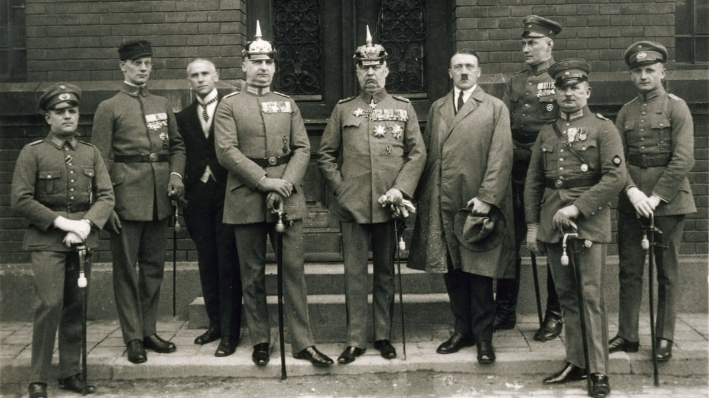
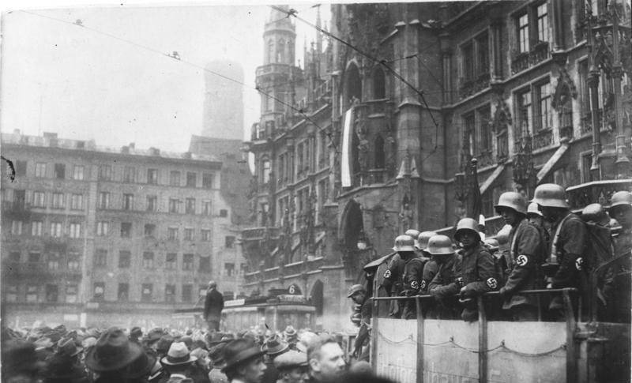

Происшедшее 100 лет назад, в ночь с 8 на 9 ноября 1923 года, вооружённое выступление сторонников Гитлера в Мюнхене, получившее название «пивной путч», современные историки называют дилетантским. Однако известно, чем в конце концов завершилось совсем не дилетантское движение, возглавляемое этим человеком. И это даёт повод средствам массовой информации критически освещать «мирные» протесты и демонстрации чужеродных элементов, которые под разными лозунгами в последнее время всё чаще происходят на улицах и площадях немецких городов, а компетентным структурам более пристально изучать и максимально ограничивать такие действия.
Пивной путч: попытка государственного переворота в Германии
Пивной путч, произошедший в ноябре 1923 года, имел широкие политические последствия для Германии. Этот неудачный покушение на государственный переворот стал одним из первых шагов национал-социалистов к достижению политической власти в стране. После провала путча Гитлер использовал время в тюрьме для написания своей автобиографии "Моя борьба" (Mein Kampf), где изложил свои идеи и стратегии для будущего развития Германии. Эта книга стала основополагающим документом национал-социализма и оказала значительное влияние на последующие события.
Столкновения и аресты: последствия Пивного путча
В результате столкновений погибли несколько человек, включая полицейских и протестующих. Сам Гитлер был арестован и предстанет перед судом по обвинению в измене. Его приговорили к пяти годам тюремного заключения, однако он провел в тюрьме всего лишь около девяти месяцев. Хотя Пивной путч не привел к непосредственному захвату власти национал-социалистами, он имел серьезные последствия. Гитлер использовал судебный процесс после путча для своей пропаганды, что принесло ему широкую известность и поддержку среди населения. После выхода из тюрьмы он переорганизовал НСДАП и направил свои усилия на достижение власти путем выборов.
Ключевой момент в политической карьере Гитлера
Пивной путч, произошедший в 1923 году, играл ключевую роль в политической карьере Адольфа Гитлера, укрепляя его авторитет внутри НСДАП и утверждая его как лидера партии. Это событие стало свидетельством его решимости использовать насилие в политике и показало его готовность к радикальным действиям для достижения своих целей.
Пивной путч поднял Гитлера на новый уровень в политической арене Германии, заставив его быть признанным как важного игрока среди других политических лидеров. Его участие в этом путче продемонстрировало его способность мобилизовать сторонников и провести дерзкое действие против существующего правительства.
Этот эпизод также подчеркнул растущее влияние национал-социализма в Германии и подготовил почву для дальнейшего успеха НСДАП под руководством Гитлера. После провала Пивного путча, Гитлер использовал свое время в тюрьме для написания "Моей борьбы", где изложил свои идеи и стратегии для будущего развития Германии, что в конечном итоге помогло ему добиться политической власти и стать канцлером страны в 1933 году.